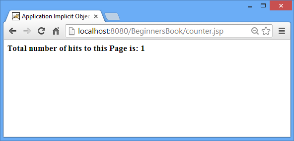

Application implicit object is an instance of javax.servlet.ServletContext. It is basically used for getting initialization parameters and for sharing the attributes & their values across the entire JSP application, which means any attribute set by application implicit object would be available to all the JSP pages.
Methods:
- Object getAttribute(String attributeName)
- void setAttribute(String attributeName, Object object)
- void removeAttribute(String objectName)
- Enumeration getAttributeNames()
- String getInitParameter(String paramname)
- Enumeration getInitParameterNames()
- String getRealPath(String value)
- void log(String message)
- URL getResource(String value)
- InputStream getResourceAsStream(String path)
- String getServerInfo()
- String getMajorVersion()
- String getMinorVersion()
- Object getAttribute(String attributeName): It returns the object stored in a given attribute name. For example the below statement would return the object stored in attribute “MyAttr”.
String s = (String)application.getAttribute("MyAttr"); - void setAttribute(String attributeName, Object object): It sets the value of an attribute or in other words it stores an attribute and its value in application context, which is available to use across JSP application. Example –
application.setAttribute(“MyAttribute”, “This is the value of Attribute”);
The above statement would have stored the attribute and its value. What would be the value of ‘s’ if we use the below statement in any of the JSP page?
String s= (String) application.getAttribute(“MyAttribute”);
String s value would be “This is the value of Attribute” since we have set it using setAttribute method.
- void removeAttribute(String objectName): This method is used for removing the given attribute from the application. For e.g. – It would remove the Attribute “MyAttr” from the application. If we try to get the value of a removed attribute using getAttribute method, it would return Null.
application.removeAttribute(“MyAttr”);
- Enumeration getAttributeNames(): This method returns the enumeration of all the attribute names stored in the application implicit object.
Enumeration e= application.getAttributeNames();
- String getInitParameter(String paramname): It returns the value of Initialization parameter for a given parameter name. Example –web.xml
<web-app> … <context-param> <param-name>parameter1</param-name> <param-value>ValueOfParameter1</param-value> </context-param> </web-app>Suppose above is my web.xml file
String s=application.getInitParameter(“parameter1”);
The value of s will be “ValueOfParameter1”. Still confused where did it come from? See the param-value tag in web.xml file.
- Enumeration getInitParameterNames(): It returns the enumeration of all the Initialization parameters.
Enumeration e= application.getinitParameterNames();
- String getRealPath(String value): It converts a given path to an absolute path in the file system.
String abspath = application.getRealPath(“/index.html”);
The value of abspath would be a complete http URL based on the existing file system.
- void log(String message): This method writes the given message to the JSP Engine’s (JSP container’s) default log file associated to the application.
application.log(“This is error 404 Page not found”);
The above call would write the message “This is error 404 Page not found” to the default log file.
- String getServerInfo(): This method returns the name and version of JSP container (JSP Engine).
application.getServerInfo();
Application Implicit object Example
A JSP page to capture number of hits using application. In this example we are counting the number of hits to a JSP page using application implicit object.
counter.jsp
<%@ page import="java.io.*,java.util.*" %>
<html>
<head>
<title>Application Implicit Object Example</title>
</head>
<body>
<%
//Comment: This would return null for the first time
Integer counter= (Integer)application.getAttribute("numberOfVisits");
if( counter ==null || counter == 0 ){
//Comment: For the very first Visitor
counter = 1;
}else{
//Comment: For Others
counter = counter+ 1;
}
application.setAttribute("numberOfVisits", counter);
%>
<h3>Total number of hits to this Page is: <%= counter%></h3>
</body>
</html>
Screenshots of output
Number of hits is 1 for the first time visitor.

Number of hits got increased when I refreshed the page.
If you like the tutorial, share it with your friends on Facebook and Google+.
Hi,
Really i Love this Website,its very very useful,,,Thanks for the creator who posted such a good information,,